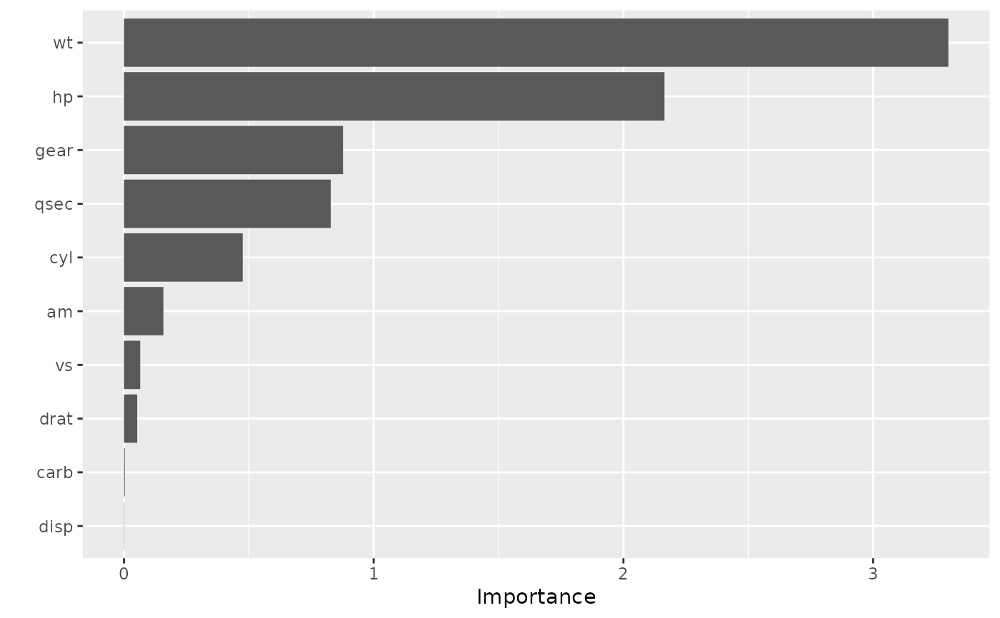
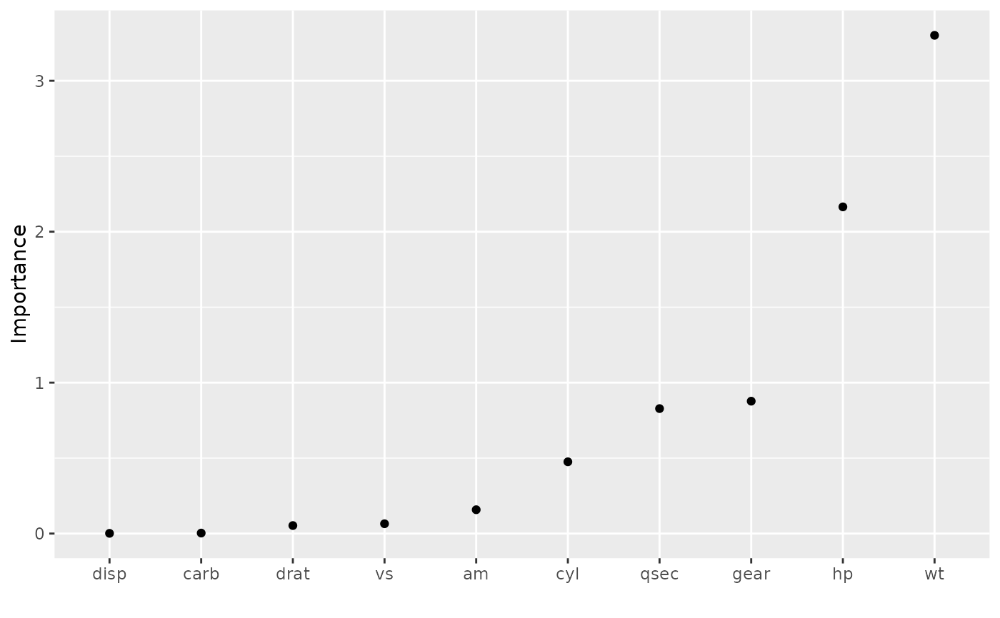
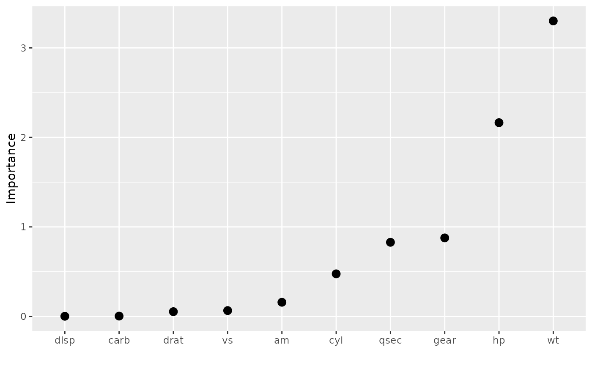
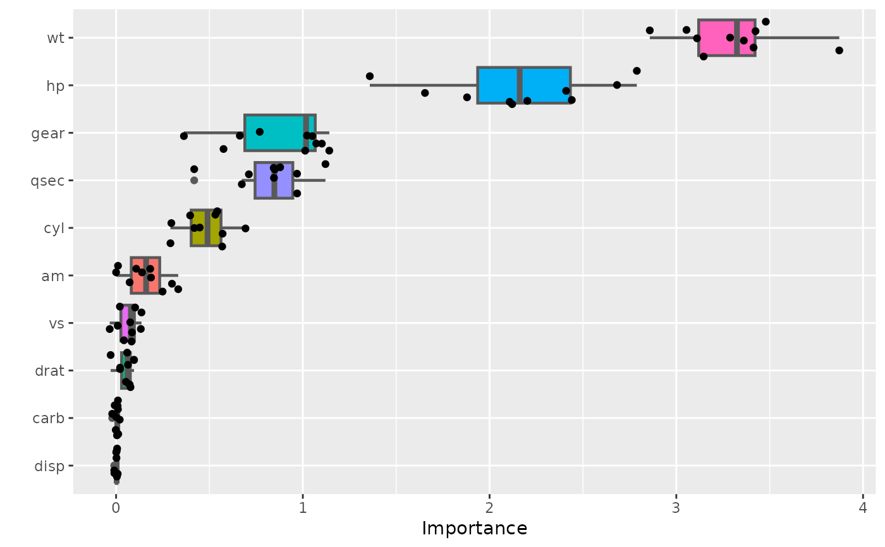
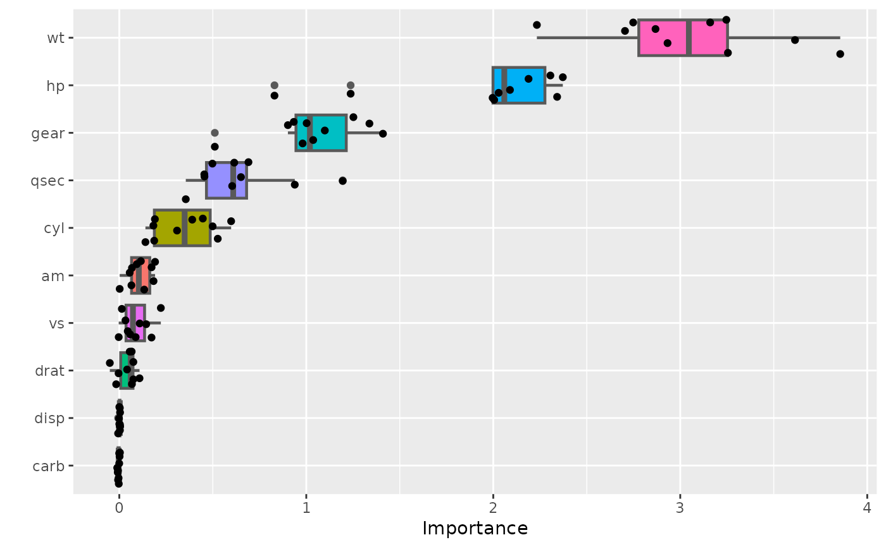

Plot variable importance scores for the predictors in a model.
Usage
vip(object, ...)
# S3 method for default
vip(
object,
num_features = 10L,
geom = c("col", "point", "boxplot", "violin"),
mapping = NULL,
aesthetics = list(),
horizontal = TRUE,
all_permutations = FALSE,
jitter = FALSE,
include_type = FALSE,
...
)
# S3 method for model_fit
vip(object, ...)
# S3 method for workflow
vip(object, ...)
# S3 method for WrappedModel
vip(object, ...)
# S3 method for Learner
vip(object, ...)Arguments
- object
A fitted model object (e.g., a
"randomForest"object) or an object that inherits from class"vi".- ...
Additional optional arguments to be passed on to
vi.- num_features
Integer specifying the number of variable importance scores to plot. Default is
10.- geom
Character string specifying which type of plot to construct. The currently available options are described below.
geom = "col"usesgeom_colto construct a bar chart of the variable importance scores.geom = "point"usesgeom_pointto construct a Cleveland dot plot of the variable importance scores.geom = "boxplot"usesgeom_boxplotto construct a boxplot plot of the variable importance scores. This option can only for the permutation-based importance method withnsim > 1andkeep = TRUE; seevi_permutefor details.geom = "violin"usesgeom_violinto construct a violin plot of the variable importance scores. This option can only for the permutation-based importance method withnsim > 1andkeep = TRUE; seevi_permutefor details.
- mapping
Set of aesthetic mappings created by
aesoraes_. See example usage below.- aesthetics
List specifying additional arguments passed on to
layer. These are often aesthetics, used to set an aesthetic to a fixed value, likecolour = "red"orsize = 3. See example usage below.- horizontal
Logical indicating whether or not to plot the importance scores on the x-axis (
TRUE). Default isTRUE.- all_permutations
Logical indicating whether or not to plot all permutation scores along with the average. Default is
FALSE. (Only used for permutation scores whennsim > 1.)- jitter
Logical indicating whether or not to jitter the raw permutation scores. Default is
FALSE. (Only used whenall_permutations = TRUE.)- include_type
Logical indicating whether or not to include the type of variable importance computed in the axis label. Default is
FALSE.
Examples
#
# A projection pursuit regression example using permutation-based importance
#
# Load the sample data
data(mtcars)
# Fit a projection pursuit regression model
model <- ppr(mpg ~ ., data = mtcars, nterms = 1)
# Construct variable importance plot (permutation importance, in this case)
set.seed(825) # for reproducibility
pfun <- function(object, newdata) predict(object, newdata = newdata)
vip(model, method = "permute", train = mtcars, target = "mpg", nsim = 10,
metric = "rmse", pred_wrapper = pfun)

# Better yet, store the variable importance scores and then plot
set.seed(825) # for reproducibility
vis <- vi(model, method = "permute", train = mtcars, target = "mpg",
nsim = 10, metric = "rmse", pred_wrapper = pfun)
vip(vis, geom = "point", horiz = FALSE)

vip(vis, geom = "point", horiz = FALSE, aesthetics = list(size = 3))

# The `%T>\%` operator is imported for convenience; see ?magrittr::`%T>%`
# for details
vis<- model %>%
vi(method = "permute", train = mtcars, target = "mpg",
nsim = 10, metric = "rmse", pred_wrapper = pfun) %T>%
{print(vip(.))}

vis
#> # A tibble: 10 × 3
#> Variable Importance StDev
#> <chr> <dbl> <dbl>
#> 1 wt 3.06 0.469
#> 2 hp 1.94 0.506
#> 3 gear 1.05 0.256
#> 4 qsec 0.646 0.252
#> 5 cyl 0.347 0.167
#> 6 am 0.108 0.0625
#> 7 vs 0.0883 0.0732
#> 8 drat 0.0419 0.0496
#> 9 disp 0.00136 0.00333
#> 10 carb -0.00350 0.00462
# Plot unaggregated permutation scores (boxplot colored by feature)
library(ggplot2) # for `aes_string()` function
vip(vis, geom = "boxplot", all_permutations = TRUE, jitter = TRUE,
mapping = aes_string(fill = "Variable"),
aesthetics = list(color = "grey35", size = 0.8))
#> Warning: `aes_string()` was deprecated in ggplot2 3.0.0.
#> ℹ Please use tidy evaluation idioms with `aes()`.
#> ℹ See also `vignette("ggplot2-in-packages")` for more information.

#
# A binary classification example
#
if (FALSE) {
library(rpart) # for classification and regression trees
# Load Wisconsin breast cancer data; see ?mlbench::BreastCancer for details
data(BreastCancer, package = "mlbench")
bc <- subset(BreastCancer, select = -Id) # for brevity
# Fit a standard classification tree
set.seed(1032) # for reproducibility
tree <- rpart(Class ~ ., data = bc, cp = 0)
# Prune using 1-SE rule (e.g., use `plotcp(tree)` for guidance)
cp <- tree$cptable
cp <- cp[cp[, "nsplit"] == 2L, "CP"]
tree2 <- prune(tree, cp = cp) # tree with three splits
# Default tree-based VIP
vip(tree2)
# Computing permutation importance requires a prediction wrapper. For
# classification, the return value depends on the chosen metric; see
# `?vip::vi_permute` for details.
pfun <- function(object, newdata) {
# Need vector of predicted class probabilities when using log-loss metric
predict(object, newdata = newdata, type = "prob")[, "malignant"]
}
# Permutation-based importance (note that only the predictors that show up
# in the final tree have non-zero importance)
set.seed(1046) # for reproducibility
vip(tree2, method = "permute", nsim = 10, target = "Class",
metric = "logloss", pred_wrapper = pfun, reference_class = "malignant")
}